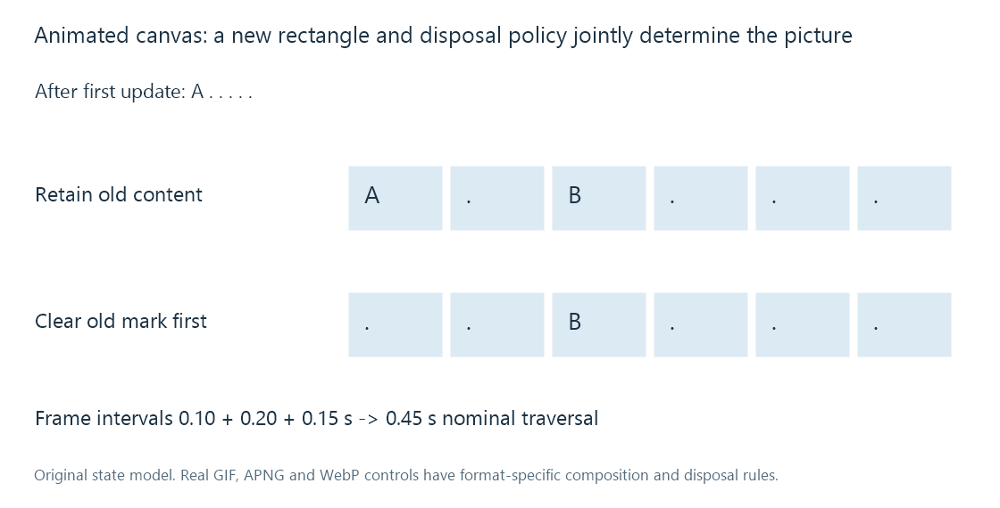

Animated images
An animated image changes a shared canvas through timed frame data and composition/disposal rules, rather than necessarily storing independent full-size pictures.
An animated image presents changes over time using an image format's frame and control structure. GIF, APNG and animated WebP provide related capabilities with different syntax and rules.
Reconstruct the canvas, not just the latest rectangle
Take an invented six-cell canvas. A first frame draws a marker in the leftmost cell; the next draws a marker in the third cell.
| Stage | Keep earlier content | Clear earlier marker before next draw |
|---|---|---|
| After first draw | A . . . . . | A . . . . . |
| After second draw | A . B . . . | . . B . . . |
The second frame's rectangle can contain only B. Whether A remains visible depends on the applicable disposal/composition behavior.

A transparent position in an update does not universally mean “erase the existing canvas here”. It may leave that destination unchanged. Some format operations also restore a previously saved canvas region. The reader must apply the source format's actual rules.
Time belongs to the composed presentation
Frames carry or inherit durations in the format's time model. A loop's nominal duration is the sum of its applicable frame intervals, rather than the number of frames divided by an assumed video frame rate.
For original intervals 0.10, 0.20 and 0.15 seconds, one traversal lasts 0.45 seconds. Repeating it twice nominally lasts 0.90 seconds, apart from any additional scheduling or loop policy.
A consumer can schedule very short delays differently or choose to suppress animation. That is separate from correctly recovering the frame rectangles and their canvas positions.
A still preview needs an instant and a reconstructed state
Choosing “frame 2” can be ambiguous. Its encoded rectangle may be only an update, while its visible canvas includes earlier retained content.
A thumbnail generator should obtain the intended composed state at a selected time. A default still image defined by a format can also have a different relationship to the animation sequence.
For an Emby image path, distinguish the animated source, any server-generated still derivative and the app's handling of the delivered resource. A static tile can be an intentional derivative even when the original contains valid animation; an incomplete tile can instead result from extracting an update without reconstructing its canvas.